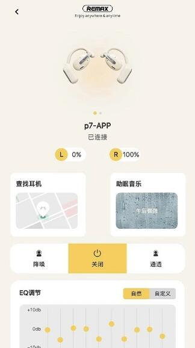

Remax 耳机 App 的设备管理原理：为什么多副耳机不乱连？
TWS 耳机配 App 早已不是新鲜事，但 Remax 在多设备管理上的设计细节值得挖一挖——从蓝牙地址作为唯一标识、左右耳独立电量读到配对模式状态机，每一层取舍都指向同一个目标：让"连错耳机"这种事尽量不发生。
我手上有三副 TWS 耳机——通勤一副、运动一副、出差还有一副。之前用过几个不同品牌的配套 App，无一例外都会在"多设备切换"这件事上栽跟头：明明只想连运动那副，手机却偷偷回连了通勤那副；两副同时开盖，App 就开始在两个连接之间跳来跳去。直到接触 Remax官网 上这款应用，才发现原来 App 的设备管理还能做得这么"不添乱"。
这篇文章不打算教你怎么配对、怎么调 EQ——这些 Remax文档 里都有。我想聊的是：为什么 Remax 的设备管理体验和别家不一样？它背后做了哪些设计取舍？
核心问题：TWS 耳机的"身份识别"难题
TWS 和传统有线耳机最大的区别，除了真无线本身，就是每副耳机内部其实是两个独立的蓝牙设备。左耳朵一个地址，右耳朵一个地址，还有一个"主机"角色负责和手机通信。当你手上有好几副耳机时，问题就来了：
手机的蓝牙配对记录里堆着七八个地址，App 扫一遍，怎么知道"这堆地址里哪几个是同一副的"？又怎么知道"用户现在想用哪一副"？
大部分品牌的做法很粗暴：一个蓝牙地址 = 一个设备。App 把左耳朵和右耳朵各算一条记录，用户手动合并或者默认它们是一对。这种设计在单副耳机时没问题，多副耳机就乱了——六个地址三条记录，配对、断开、重连的逻辑全部堆在 App 层，很容易出错。

Remax 的三层身份架构
Remax下载 页面装完 App 打开设备列表时，第一眼就注意到一个别家没有的细节——每个设备卡片上都挂着蓝牙地址这一行。从样本文档里那些看似琐碎的细节里，我拼出了 Remax 在设备身份这件事上的三层设计。
第一层：蓝牙地址作为唯一真相源
Remax 的设备卡片上永远挂着一行蓝牙地址——不是型号名，不是用户起的昵称，是那个形如 96:59:B7:75:23:E3 的十六进制串。
为什么要把这个技术味很重的东西直接暴露给用户？文档里有句话点透了："同一型号的耳机买了一副以上时，名称会一模一样，只有地址能区分。" 型号名是出厂写死的，昵称可以随便改，只有蓝牙地址是硬件层面烧进去的、改不了的。Remax 把这行地址放在卡片上，等于告诉用户：App 内部认的就是这个，你要排查问题也得认这个。
这个设计看着反直觉——哪个 App 会把硬件 ID 直接甩给用户？但它解决了一个真实的痛点：当你手上有两副同型号耳机时，型号名和昵称都不可靠，只有地址是确定的。Remax 干脆把"真相源"暴露出来，让排查过程变成"对比地址"而不是"猜哪个是哪个"。
第二层：配对模式是一个显式状态机
我对 Remax 最印象深刻的细节，是它把"怎么进配对模式"这件事写得格外详细——不只是"长按功能键"，而是分了三种场景：第一次开机、换新连接、按都按不动要复位。还画了一张灯效对照表：快闪是配对模式、慢闪是等待回连、红蓝交替是另一种配对模式……
为什么要费这个劲？因为 TWS 耳机的状态转换比大多数人想的要复杂。耳机不是一个"开/关"二态设备，它内部至少有：关机、开机待连、已连接、配对模式、复位中、充电中这几种状态，而且很多状态之间的转换依赖特定的按键时长（2~3 秒 vs 5 秒 vs 8~10 秒）。
Remax 的 App 文档没有假设用户"应该知道怎么配对"，而是把耳机的状态机直接摊开讲。这背后是一个很关键的产品判断：用户搜不到设备，90% 的原因是耳机没在配对模式，而不是 App 扫得不够快。与其优化扫描逻辑，不如先把"让耳机进对的状态"这件事讲清楚。
第三层：左右耳是两块独立的电池
看 Remax 的主控页，L 和 R 两个电量徽标各自独立刷新，数值差个百分之几十是常态。文档里明确说"两耳数值不同步是常态"，还给了电量读数的使用参考区间。
这个设计的底层逻辑是：TWS 耳机的左右耳从来就不是两块一模一样的电池。主耳（通常是先被手机连的那只）要额外承担和手机的通信转发，耗电更快；两耳使用时长不同、老化程度不同，容量衰减也不会同步。如果 App 只显示一个综合电量，用户看到"还剩 30%"的时候，实际可能是左耳已经 5% 了、右耳还 55%——单边先没声就是这么来的。
Remax 选择"分开显示 + 分钟级刷新 + 明确说明读数差异是正常的"，而不是追求一个看起来漂亮但不准确的单一数字。这是典型的"暴露真实状态"的设计哲学。
这套设计的代价
讲了这么多好的，也得说说它的代价。
最明显的：信息密度对新手不友好。蓝牙地址那行字放在卡片上，对第一次用的人来说就是噪音。配对模式分三种情况、复位要按 8~10 秒，这些细节写在文档里挺好，但如果 App 本身能加个"引导式配对"流程（比如耳机灯闪几下就让 App 判断状态），新手门槛会更低。
另一个代价：状态通道的依赖。Remax 的电量读数、设备状态判断全部走蓝牙 GATT 通道，这条通道如果没建好，主控页就会显示横杠或 0%。文档里提到的"重连一次"或"放回仓再取出"就是在尝试重新建立这条通道。相比那些"读不到就给个估算值"的 App，Remax 选择了"宁可显示空也不瞎猜"——诚实，但偶尔会让人慌一下。
多设备管理的边界也很清晰：App 只管自己这一侧的设备清单，手机系统蓝牙的配对记录还是由系统管。删设备要两边都清，重装 App 列表会清空重来——这些都不是 bug，是设计上的职责划分。但对用户来说，"为什么 App 里删了，系统蓝牙里还在"确实是一个常见的困惑点。
适合谁，不适合谁
如果你的需求是"手上两三副同型号耳机、经常切换、对连接稳定性有要求"，Remax 这套设计正好命中痛点。蓝牙地址让你能精准区分、显式的配对状态机让你能快速定位问题、左右耳独立电量让你能提前发现衰减不均的苗头。
但如果你只有一副耳机、从不折腾配对、只想打开就用，那它的设计可能显得"想太多"——蓝牙地址那行你永远不会看、配对模式的三种场景你只会用到第一种、分开的电量对你来说就是两个数字。这不是 Remax 做得不好，是它瞄准的用户画像本来就不是"单副耳机、懒用户"。
我用了几个月的感受是：Remax 的设备管理设计，本质上是在减少隐式假设。它不假设"用户知道长按几秒进配对模式"、不假设"左右耳电量应该一致"、不假设"同型号耳机只有一副"。每一个技术细节都被显式地暴露出来，让你要么理解它、要么按照它的规则来。这种设计在简单场景下显得啰嗦，但在复杂场景下能帮你省掉大量排障时间。关于这款应用的完整资料集，我在 GitHub 上维护，考虑到国内网络环境，Gitee 和 GitCode 也各放了一份镜像。
你手上有几副耳机？会不会经常切错？